启动流程概览
- 加载 BIOS 的硬件信息并自我测试 , 依据设定取得第一个可开机的装置 ;
- 读取并执行第一个开机装置内 MBR 的 boot Loader ( grub, spfdisk 等程序 );
- 依据 boot loader 的设定加载 Kernel
- Kernel 会开始侦测硬件并加载驱动程序 ;
- 在硬件驱动成功后 ,Kernel 会主动呼叫 init 程序
- init 会取得 run-level 信息 ;
- init 执行 /etc/rc.d/rc.sysinit 档案来准备软件执行的作业环境 ( 如网络、时区等 );
- init 执行 run-level 的各个服务的启动 (script 方式 );
- init 执行 /etc/rc.d/rc.local 档案 ;
- init 执行终端仿真程序 mingetty 来启动 login 程序 ,
- 最后等待用户登入
详细讲解
开机软件 —— BIOS、Grub
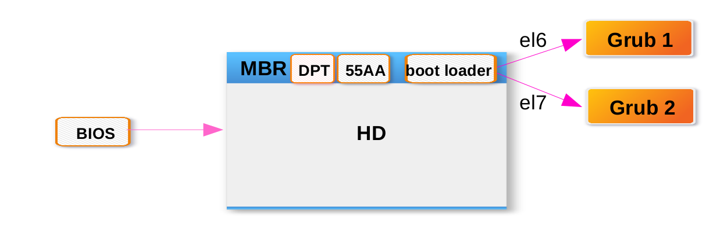
名词解释
- BIOS 一个写入到主板上的一个软件程序,在开机的时候,计算机系统会主动执行第一个程序
- HD 硬盘
- MBR 主要启动记录区(Master Boot Record)该硬盘里的第一个扇区 512 bytes
- boot loader 开机管理程序,可读取核心文件并执行 446 bytes
- DPT 磁盘分割表(disk partition table)记录整颗硬盘分割状态 64 bytes
- 55AA 2 bytes
流程解释
- 通电后,服务器主版上的一个软件 BIOS 启动,他的任务就是找到带有开机程序的设备,此处以硬盘为例, BIOS 的任务结束;
- 该硬盘上的第一个扇区中有一个开机管理程序, rhel6 上为 grub1 , rhel7 上为 grub2 ,版本不同;
- 接下去就是 grub 在工作了。
BIOS
开机时按下 pause break 暂停中断,可以看到 bios 的大概信息:
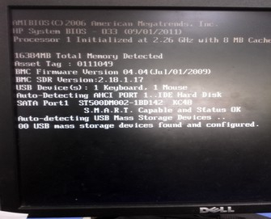
AMIBIOS(C)2006 American Megatrends, Inc.
基本输入输出系统的版本为 AMIBIOS ,为美国趋势科技
2006 年生产
HP System BIOS – 033 (09/01/2011)
惠普系统的基本输入输出系统,支持到 2011/01/09 的硬件
Processor 1 Initiallized at 2.26 GHz with 8 MB cache
处理器 cpu 一个,频率为 2.26GHz , 8M 缓冲
16384MB Total Memory Detected
16G 内存
Asset Tag : 0111049
资产编号为 0111049
BMC Firmware Version 04.04(Jul/01/2009)
BMC SDR Version : 2.18.1.17
basebiard management controller 底板管理控制器的缩写,时一个在 IPMI 结构下提供智能管理的控制器
IPMI 时智能平台管理界面,即与 intel 结构的企业系统中所使用外围设备采用的一种工业标准。
USB Device(s) : 1 Keyboard , 1 Mouse
usb 设备有一个鼠标一个键盘,此处可以查看是否有人恶意用 usb 设备要攻击服务器
Auto-Detecting AHCI PORT 1 .. IDE Hard Disk 自动检测
开机按下 F10 ,进入 BIOS 管理界面
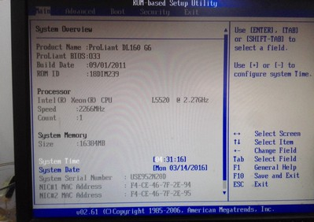
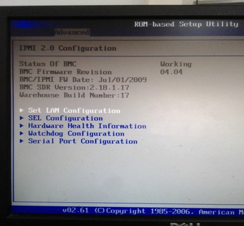
IPMI
HP 服务器远程管理平台
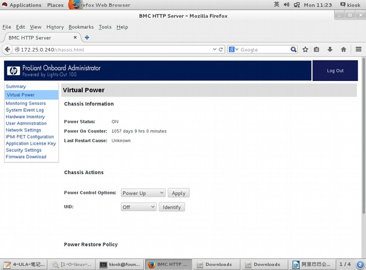
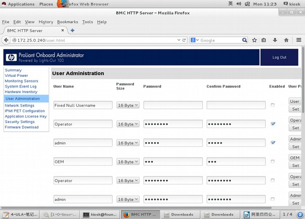
开机文档 —— menu.lst、grub.conf
Grub 配置文档
- menu.lst
- grub.conf
[root@rhel6 grub]# ll /boot/grub/ |
流程解释
- grub 软件的任务就是找到核心文件,并加载该文件
- 内核的第一任务就是驱动硬件
- 内核第二任务就是呼叫 init 程序,接下来就交给 init 了
init 程序
流程解释
- init 程序挂接 /etc 和 /lib 所在的目录分区
- 执行 /etc/inittab 文件,取得 run-level 信息,判断是否开启终端、网络等
- 执行 /etc/rc.d/rc.sysinit 初始化环境 ( 如网络、时区等 )
- 执行 run-level 的各个服务的启动 (script 方式 );
- 执行 /etc/rc.d/rc.local 档案
- 执行终端仿真程序 mingetty 来启动 login 程序,最后等待用户登入
init 执行的相关文件
[root@rhel6 ~]# cat /etc/inittab |
文件夹里都是软连接，软链接链接到/etc/rc.d/init.d目录下的文件，目录下都是服务的启动脚本，目录和etc/init.d下的内容一样，因为有个软连接在etc下面rcX.d下的文件K开头表示服务要关闭的，S开头的表示系统启动时要开启的，（例如rc0.d下，几乎都是K打头的），在5里后面的数字标示优先级，数字小优先级高，在6里这些数字无用，因为是并行的，没有依赖关系。
无论是3还是5的runlevel，最后都会读到S99local文件，链接到/etc/rc.d/rc.local文件
文件说明：这个脚本在所有脚本执行完之后执行，开机过程汇总最后读到的一个文件，这个文件是开机自定义启动脚本，把自己想要执行的命令写进来。系统启动命令也会完成。
备注:以上分析均为 rhel6 操作系统, rhel7 启动改为 systemd 模式,相关文件在 /usr/lib/systemd/system/*
run-level(启动等级)
Runlevel 0 是让init关闭所有进程并终止系统。
Runlevel 1 是用来将系统转到单用户模式，单用户模式只能有系统管理员进入，在该模式下处理那些在有登录用户的情况下不能进行更改的文件。
Runlevel 2 是允许系统进入多用户的模式，但并不支持文件共享，这种模式很少应用。
Runlevel 3 是最常用的运行模式，主要用来提供真正的多用户模式，也是多数服务器的缺省模式。
Runlevel 4 一般不被系统使用，用户可以设计自己的系统状态并将其应用到runlevel 4阶段，尽管很少使用，但使用该系统可以实现一些特定的登录请求。
Runlevel 5 是将系统初始化为专用的X Window终端。对功能强大的Linux系统来说，这并不是好的选择，但用户如果需要这样，也可以通过在runlevel启动来实现该方案。
Runlevel 6 是关闭所有运行的进程并重新启动系统。
相关的命令
rhel6
chkconfig —list ===>查看不同等级中各项服务的启动情况(开机启动项)
chkconfig 服务名 on ===>开启某个服务开机自启动，off代表关闭
chkconfig —level 35 服务名 off ===>在启动等级为3和5的时候该服务不开机启动
rhel7
开机自启的服务通过systemctl enable命令来实现
Systemctl enable httpd ===>自启动httpd服务，关闭使用disable。
systemctl get-default ===>查看当前默认启动级别(启动级别的说明查看/etc/inittab)
systemctl set-default multi-user.target ===>设置默认启动级别为3(7的的启动级别名称有所变化)
实验
rhel6 单用户模式修改密码
- 1> 进入到数及时界面时,按上下键进入以下界面,选择 kernel 一行,按下 e 进行编辑
- 2> 在最后追加 “空格”和1 或者 “空格” single 后,按下 esc
- 3> 再按下 b ,启动后,进入单人模式后,输入 passwd 进行密码修改,修改完成后, reboot 即可。
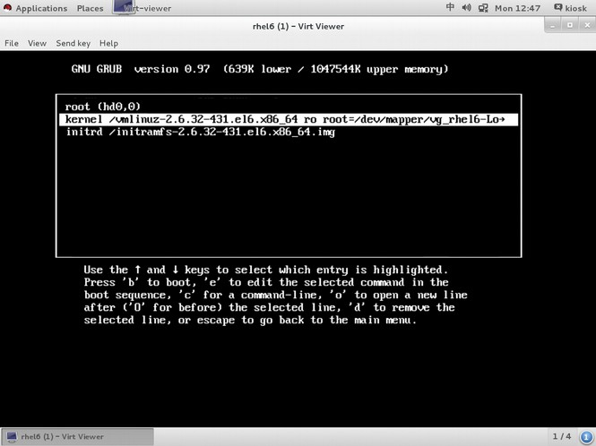
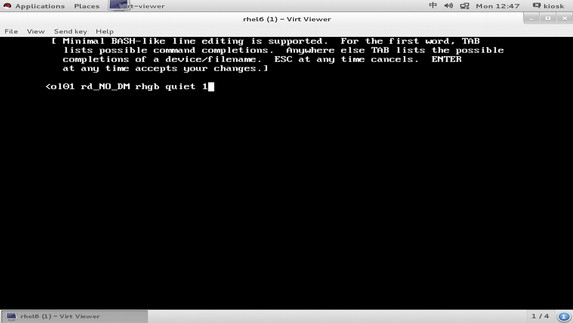
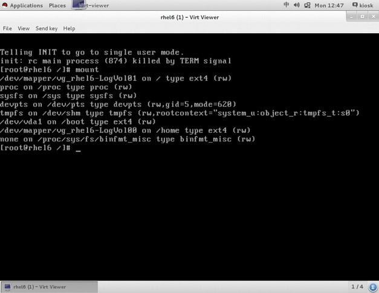
rhel7 单用户模式修改密码
- 1> 进入如下界面后按 e 进入编辑模式
- 2> 找到 linux16 开始的那一行,删除没用的,在最后追加 rd.break ,然后按 Ctrl+x 重启即可进入单人模式
- 3> 进入单用户模式后,用 mount 命令查看一下,会发现根目录时只读模式,因此需要重新挂载为读写模式
mount -o remount,rw /sysroot |
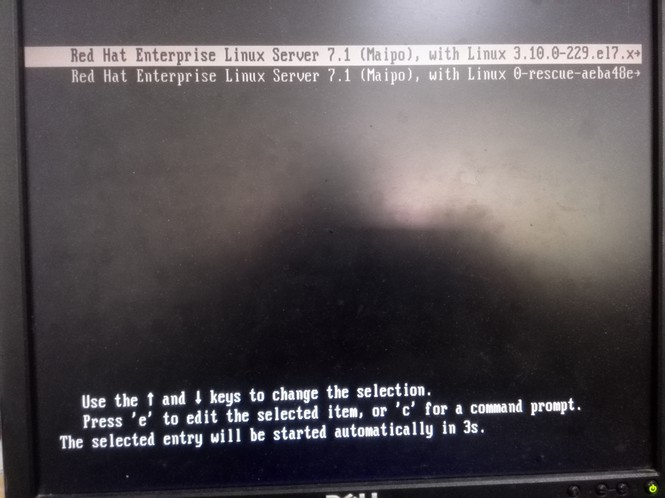
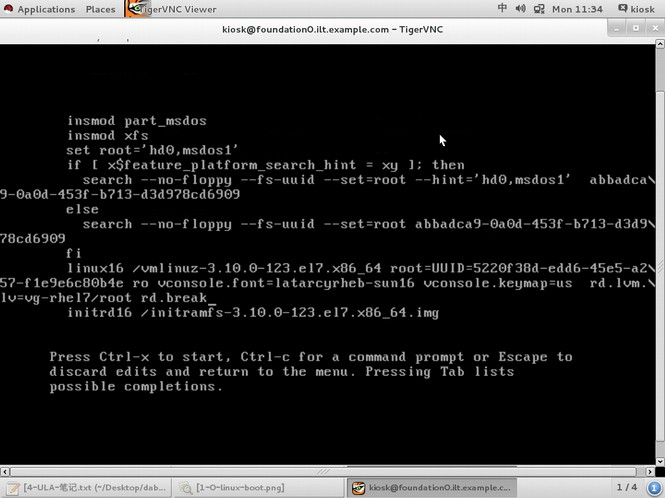
rhel6 GRUB菜单加密
grub-md5-crypt
输入密码，生成一串MD5值，这个就是grub密码，复制好这段内容，粘贴到配置文件中
vim /boot/grub/grub.conf
title那一行的上面加上“password redhat”这样做是明文密码，不安全，所以也可写为“password –-md5 xxxxxxxxx”
这一行要放在title的上面
放在title的下面是系统启动需要密码才可以启动
rhel7 GRUB2菜单加密
vim /etc/grub.d/40_custom
set superusers=”root” ===>设置超级用户的名称，注意：名称任意可以不用是系统中存在的用户
password root redhat ===>设置用户名和密码，注意：该密码为明文，如果需要密文需要生成密文密码
保存退出
grub2-mkconfig -o /boot/grub2/grub.cfg ===>使用该命令来重新生成grub.cfg文件来使配置生效
grub2-mkpasswd-pbkdf2 ===>该命令为生成加密密码
password_pbkdf2 ===>如果使用加密的密文需要定义密码的加密方式，后面同上跟上用户名和加密后的密码
Linux 开机启动流程课后作业
- 名词解释
BIOS
MBR
boot loader
grub
DPT
55AA
- 请自己描述 linux 开机启动的流程,并画出流程图。
- linux 破解 root 密码